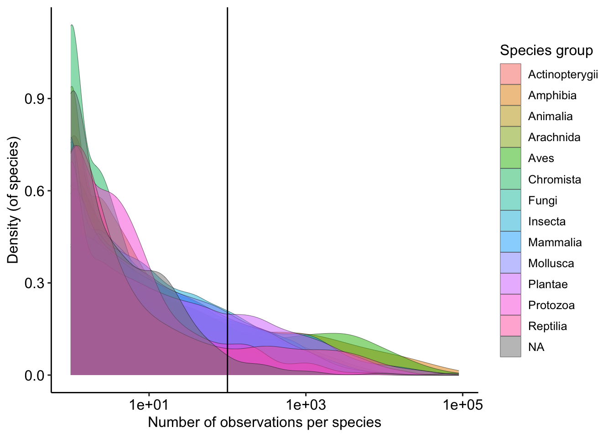
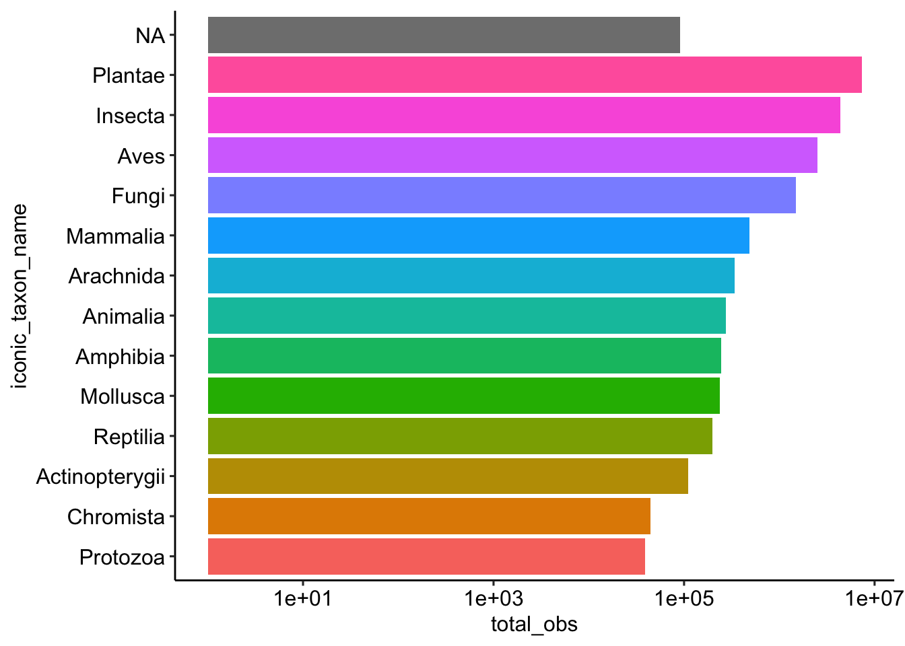
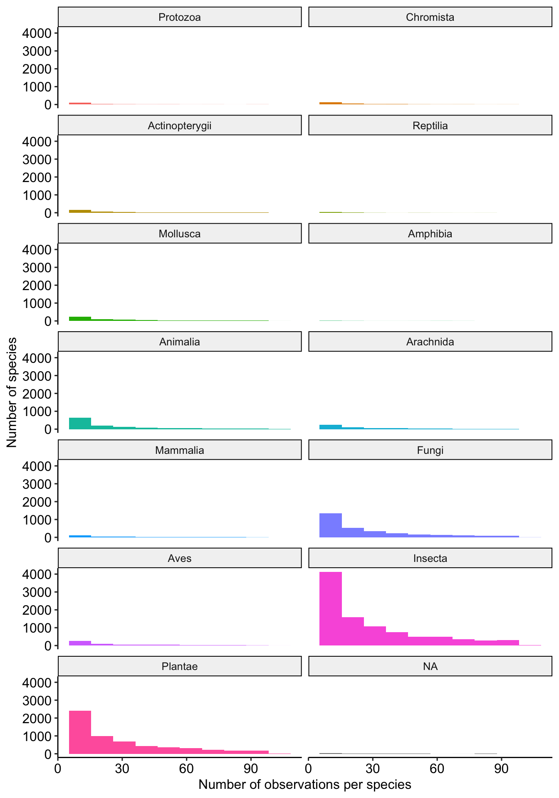

library(ggplot2)
library(dplyr)
library(arrow)
library(dbplyr, warn.conflicts = FALSE)
library(duckdb)
library(terra)
library(mapview) # for interactive maps
# set ggplot theme of choice
theme_set(ggpubr::theme_pubr())Using the iNaturalist Canada parquet file
1 What is a parquet file?
For this working group, iNaturalist Canada provided us their data as a parquet file. Parquet is an open source file format that compresses and encodes large datasets for more efficient data storage, and importantly, more efficient retrieval of informaiton within the dataset. This format makes data lighter to handle because it is column-oriented, rather than row-oriented like a CSV file (which quickly gets overwhelming when you have many rows!).
This little tutorial will show you how to open the parquet file if you would like to explore it yourself. As a reminder, we have already made density maps from this file, so you may not need to explore it (depending on the challenge you’d like to build)!
First, load the R packages you will need to use to access the density map layers:
Open the parquet file
Next, we will open the parquet file using the package arrow:
inat_pq <- arrow::open_dataset("~/McGill University/Laura's Lab_Group - BioBlitz/data/raw/biodiversity-data/inat-canada/iNat_non_sensitive_data_Jan2025.parquet")Note that this isn’t the same as loading iNaturalist Canada as a CSV in your R session. Here, we’re establishing a connection to the database so we can make queries for the data that we really want.
Take a look at the columns that are available in the file. We’ll use these columns to query the data with dplyr later:
inat_pq$schemaSchema
OBJECTID: int64
id: int32
observed_on_string: string
user_login: string
quality_grade: string
license: string
url: string
tag_list: string
description: string
num_identification_agreements: int32
num_identification_disagreements: int32
captive_cultivated: string
latitude: double
longitude: double
positional_accuracy: int32
public_positional_accuracy: int32
geoprivacy: string
taxon_geoprivacy: string
coordinates_obscured: string
positioning_method: string
positioning_device: string
place_town_name: string
place_county_name: string
place_state_name: string
place_country_name: string
place_admin1_name: string
place_admin2_name: string
species_guess: string
scientific_name: string
common_name: string
iconic_taxon_name: string
geometry: binary
See $metadata for additional Schema metadataQuery the data
Next, we’ll query the data we want, and we will finish the query with the collect() command to load the query’s result into this R session.
Here, we’ll summarise the number of observations per species, per group using dplyr (but you can use other dplyr functions like filter() for example!)
query <- inat_pq |>
# E.g. you could filter by species group:
# filter(iconic_taxon_name == "Aves") |>
# Summarise number of obs per species, per species group
group_by(iconic_taxon_name, scientific_name) |>
summarize(total_obs = n()) |>
# load the query into our R session
collect()Let’s have a look at the distribution of the number of observations per species, per group. We’ll put a vertical line to show the 100 observations/species mark, which we’ll dive into soon.
ggplot(data = query) +
geom_density(aes(x = total_obs,
fill = iconic_taxon_name),
alpha = .5, lwd = .1) +
geom_vline(xintercept = 100) +
scale_x_log10() +
labs(x = "Number of observations per species",
y = "Density (of species)",
fill = "Species group") +
theme(legend.position = "right")
Let’s summarise our initial query to the species group level, to see which groups have more samples:
summary_query = query |>
group_by(iconic_taxon_name) |>
summarise(total_obs = sum(total_obs),
median_obs = median(total_obs))This is just a few lines of code to reorder the species group names according to the number of observations, for prettier plots:
query$iconic_taxon_name = factor(query$iconic_taxon_name,
levels = summary_query$iconic_taxon_name[order(summary_query$median_obs)])
summary_query$iconic_taxon_name = factor(summary_query$iconic_taxon_name,
levels = summary_query$iconic_taxon_name[order(summary_query$total_obs)])Which groups have more total samples?
ggplot(data = summary_query) +
geom_bar(aes(y = iconic_taxon_name,
x = total_obs,
fill = iconic_taxon_name),
stat = "identity") +
theme(legend.position = "none") +
scale_x_log10()
Which species have < 100 observations?
Species with under 100 observations are of special interest to iNaturalist, so let’s have a look at which species have fewer than 100 observations.
First, let’s filter our initial query to only retain species with < 100 observations. Here, I removed species with < 5 observations to get rid of some species with mistakes in their names, or that were just higher-level classes, etc. (But you can remove this condition too to make sure you’ve got everything).
query_under100 = query |>
filter(total_obs < 100 & total_obs > 5)How many species in each group have fewer than 100 observations?
query_under100 |>
group_by(iconic_taxon_name) |>
summarise(nsp = n_distinct(scientific_name)) # A tibble: 14 × 2
iconic_taxon_name nsp
<fct> <int>
1 Protozoa 159
2 Chromista 240
3 Actinopterygii 350
4 Reptilia 68
5 Mollusca 577
6 Amphibia 37
7 Animalia 1246
8 Arachnida 559
9 Mammalia 284
10 Fungi 3045
11 Aves 577
12 Insecta 9484
13 Plantae 5781
14 <NA> 91Let’s have a look at the number of observations per species for these under-sampled species.
ggplot(data = query_under100) +
geom_histogram(aes(x = total_obs,
fill = iconic_taxon_name),
bins = 10) +
theme(legend.position = "none") +
facet_wrap(~iconic_taxon_name, ncol = 2) +
labs(x = "Number of observations per species",
y = "Number of species") 
We can see that for groups like fungi, insects and plants, there are many species with less than 30 observations!
query_under100 |>
group_by(iconic_taxon_name) |>
summarise(nsp = n_distinct(scientific_name))# A tibble: 14 × 2
iconic_taxon_name nsp
<fct> <int>
1 Protozoa 159
2 Chromista 240
3 Actinopterygii 350
4 Reptilia 68
5 Mollusca 577
6 Amphibia 37
7 Animalia 1246
8 Arachnida 559
9 Mammalia 284
10 Fungi 3045
11 Aves 577
12 Insecta 9484
13 Plantae 5781
14 <NA> 91Convert the parquet query into a vector and a raster layer
Let’s make the iNaturalist query into a spatial object. First, we’ll make a vector layer, which we’ll then transform into a raster layer.
For the example, we’ll only do this for plants:
obs <- inat_pq |>
# filter to plant species with < 100 observations:
filter(scientific_name %in% query_under100$scientific_name,
iconic_taxon_name %in% "Plantae") |>
# select columns we want to keep
select(c(longitude, latitude,
iconic_taxon_name,
scientific_name,
coordinates_obscured)) |>
collect()Next, we need the polygon of Canada and a base grid that we’ll use to make our raster.
# Load Canada polygon
canada = sf::read_sf("~/McGill University/Laura's Lab_Group - BioBlitz/data/raw/base-layers/canada-polygon/canada.outline.shp")
# Read in base grid layer to make the raster
base.50k = terra::rast("~/McGill University/Laura's Lab_Group - BioBlitz/data/raw/base-layers/canada.base.5k.tiff") |>
# convert to a coarser resolution for this example
terra::aggregate(fact = 10)Next, we convert the iNaturalist data to a vector layer and make sure to project it and to crop out any points that are not within Canada (just in case):
# convert the iNaturalist ob
inat.v = terra::vect(obs, geom = c("longitude","latitude"),
crs="+proj=longlat +ellps=WGS84")
# project to match the base grid
inat.v = terra::project(inat.v, crs(base.50k))
# crop observations outside of Canada
inat.v = terra::crop(inat.v, canada)Now we can convert this vector into a raster of the density of observations of plant species that have < 100 observations in Canada:
# make iNat density layer
rareplant.density = rasterize(inat.v, base.50k, fun = "length")
# plot it!
pal = viridis::turbo(5)
mapview(rareplant.density,
col.regions = pal,
layer.name = "Density",
na.color = "transparent")